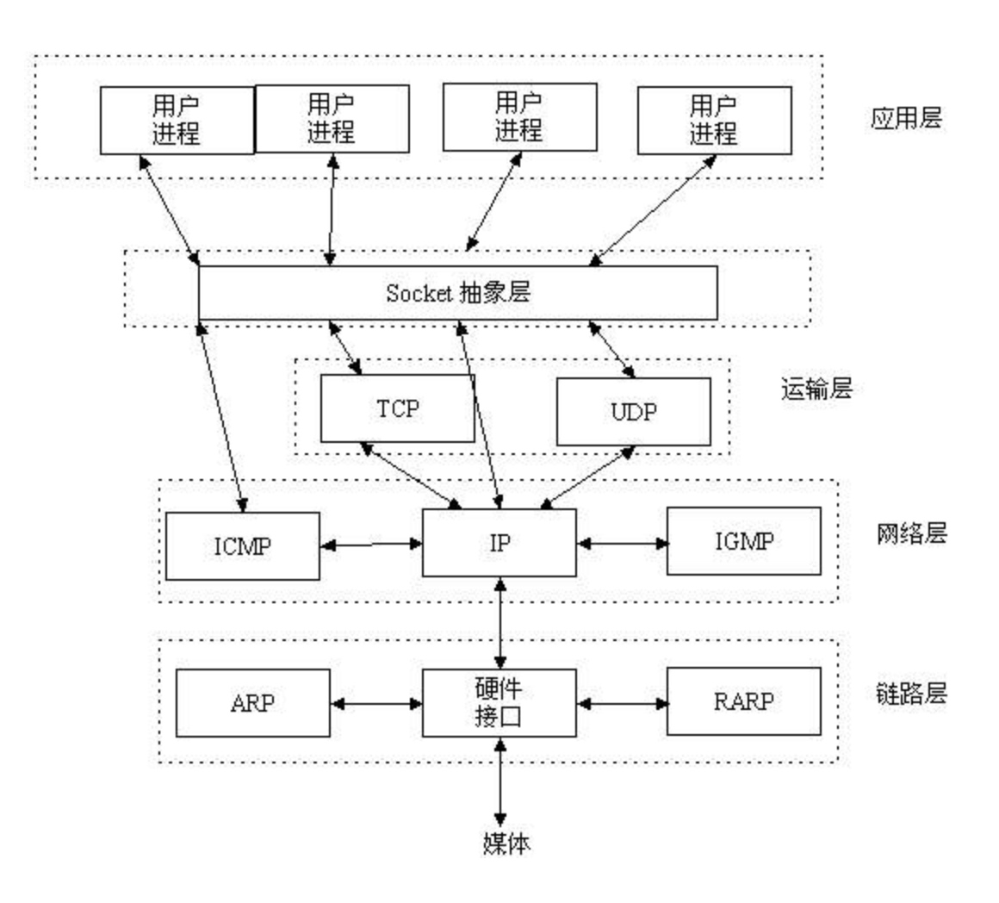
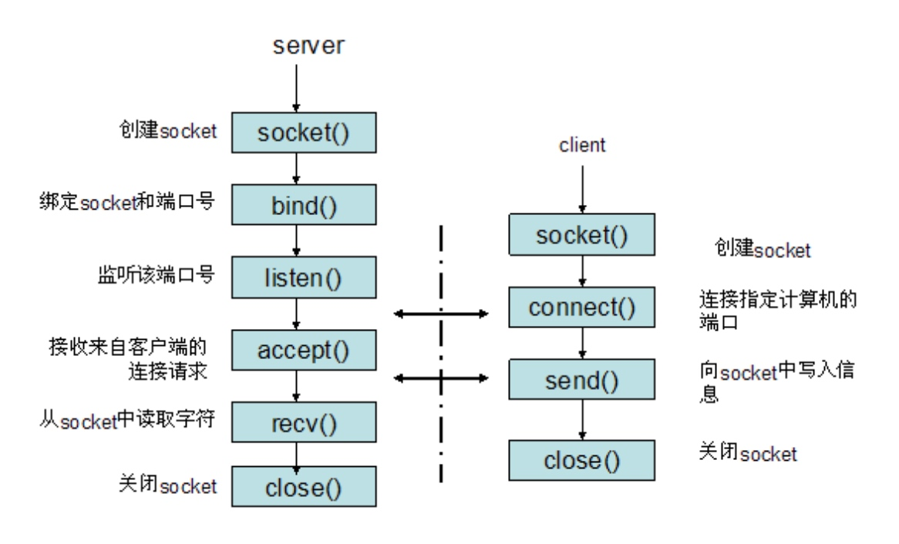

socket 的原意是"插座", 在计算机通讯领域,socket被翻译为"套接字".
Socket是什么,套接字是什么
socket是在应用层和传输层之间的一个抽象层,他把 TCP/IP 层复杂的操作抽象为几个简单的接口供应用层调用已实现进程在网络中通信

socket起源于UNIX，在Unix一切皆文件哲学的思想下，socket是一种"打开—读/写—关闭"模式的实现，服务器和客户端各自维护一个"文件"，在建立连接打开后，可以向自己文件写入内容供对方读取或者读取对方内容，通讯结束时关闭文件。
socket通信流程
socket是"打开—读/写—关闭"模式的实现，以使用TCP协议通讯的socket为例，其交互流程大概是这样子的

- 服务器根据地址类型（ipv4,ipv6）、
socket类型、协议创建socket - 服务器为socket绑定ip地址和端口号
- 服务器socket监听端口号请求，随时准备接收客户端发来的连接，这时候服务器的socket并没有被打开
- 客户端创建socket
- 客户端打开socket，根据服务器ip地址和端口号试图连接服务器socket
- 服务器socket接收到客户端socket请求，被动打开，开始接收客户端请求，直到客户端返回连接信息。这时候socket进入阻塞状态，所谓阻塞即accept()方法一直到客户端返回连接信息后才返回，开始接收下一个客户端谅解请求
- 客户端连接成功，向服务器发送连接状态信息
- 服务器accept方法返回，连接成功
- 客户端向socket写入信息
- 服务器读取信息
- 客户端关闭
- 服务器端关闭
Socket有哪些类型
这个世界上有很多种套接字（socket），比如 DARPA Internet 地址（Internet 套接字）、本地节点的路径名（Unix套接字）、CCITT X.25地址（X.25 套接字）等。但本教程只讲第一种套接字——Internet 套接字，它是最具代表性的，也是最经典最常用的
流格式套接字(SOCK_STREAM)
流格式套接字（Stream Sockets）也叫“面向连接的套接字”，在代码中使用 SOCK_STREAM 表示。
SOCK_STREAM 是一种可靠的、双向的通信数据流，数据可以准确无误地到达另一台计算机，如果损坏或丢失，可以重新发送。
SOCK_STREAM 有以下几个特征：
- 数据在传输过程中不会消失；
- 数据是按照顺序传输的；
- 数据的发送和接收不是同步的（有的教程也称“不存在数据边界”）。
流格式套接字使用TCP 协议（The Transmission Control Protocol，传输控制协议）
关于 "TCP/IP":
* TCP 用来确保数据的正确性
* IP（Internet Protocol，网络协议）用来控制数据如何从源头到达目的地，也就是常说的“路由”。
数据的发送和接收不同步问题
假设传送带传送的是水果，接收者需要凑齐 100 个后才能装袋，但是传送带可能把这 100 个水果分批传送，比如第一批传送 20 个，第二批传送 50 个，第三批传送 30 个。接收者不需要和传送带保持同步，只要根据自己的节奏来装袋即可，不用管传送带传送了几批，也不用每到一批就装袋一次，可以等到凑够了 100 个水果再装袋。
流格式套接字的内部有一个缓冲区（也就是字符数组），通过 socket 传输的数据将保存到这个缓冲区。接收端在收到数据后并不一定立即读取，只要数据不超过缓冲区的容量，接收端有可能在缓冲区被填满以后一次性地读取，也可能分成好几次读取。
也就是说，不管数据分几次传送过来，接收端只需要根据自己的要求读取，不用非得在数据到达时立即读取。传送端有自己的节奏，接收端也有自己的节奏，它们是不一致的。
流格式套接字有什么实际的应用场景吗？浏览器所使用的 http 协议就基于面向连接的套接字，因为必须要确保数据准确无误，否则加载的 HTML 将无法解析。
数据报格式套接字(SOCK_DGRAM)
数据报格式套接字（Datagram Sockets）也叫“无连接的套接字”，在代码中使用 SOCK_DGRAM 表示。
计算机只管传输数据，不作数据校验，如果数据在传输中损坏，或者没有到达另一台计算机，是没有办法补救的。也就是说，数据错了就错了，无法重传。
因为数据报套接字所做的校验工作少，所以在传输效率方面比流格式套接字要高。
总之，数据报套接字是一种不可靠的、不按顺序传递的、以追求速度为目的的套接字。使用 UDP协议